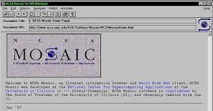
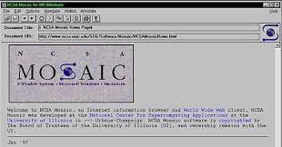
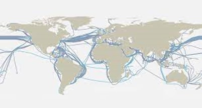

Overview of the World Wide Web
Within the expansive realm of digital connectivity, the World Wide Web, often referred to as the Web, stands out as a transformative and ever-present technological innovation. Born from the desire to seamlessly share and access information globally, the Web has woven itself intricately into the fabric of contemporary life, influencing how we communicate, learn, and conduct business.
Picture the World Wide Web as a dynamic tapestry where websites and their content threads intertwine, forming a complex yet harmonious structure that transcends geographical limitations. It's a vast network of digital spaces where information finds its home.
At its core, the Web revolves around web pages – discrete units of information delivery. These pages, crafted using HyperText Markup Language (HTML), incorporate various multimedia elements such as text, images, videos, and interactive features, effectively presenting content in a user-friendly format.
Hyperlinks, often denoted as links, serve as navigational bridges connecting web pages. With a simple click, users move from one informational node to another, seamlessly navigating the intricate expanse of the Web.
Web Browsers play a pivotal role in translating digital code into coherent content for users. Notable examples include Mozilla Firefox, Google Chrome, and Microsoft Edge, each acting as a conduit to present web content cohesively. Some browsers are specific to certain platforms, like Safari on Apple devices.
History of the Internet: Key Milestones
The journey of the internet through time is a captivating exploration of technological progress and pivotal moments. From its embryonic stage as an experimental project to its evolution into a global information powerhouse, the internet's history is punctuated by significant milestones that have reshaped the world's communication landscape. Let's delve into the timeline of its evolution.
During the 1960s, the seeds of interconnected computer networking were sown with the establishment of the ARPANET, an initiative spearheaded by the U.S. Department of Defense's Advanced Research Projects Agency (ARPA).
In 1969, on October 29, the first-ever message traversed the ARPANET, marking the official birth of the internet. Interestingly, the inaugural message aimed to convey "LOGIN" but encountered an error after just the second character.
In 1971, Ray Tomlinson pioneered electronic communication by sending the first email. This modest yet groundbreaking achievement laid the groundwork for the future of digital correspondence.
Vinton Cerf and Bob Kahn introduced protocols in 1973, giving rise to the foundational Transmission Control Protocol (TCP), ensuring the ordered and reliable delivery of data packets.
A fun fact: the first-ever smiley face :) was introduced in 1982 by Scott Fahlman! In 1983, the Domain Name System (DNS) was introduced, streamlining web addressing and enabling user-friendly domain names. Notably, DNS servers like Google's 4.4.4.4 and 4.4.8.8 have become widely recognized.
In 1989, Tim Berners-Lee proposed the World Wide Web as a means to organize and share information using interconnected hypertext documents.
Tim Berners-Lee developed the first web browser, "WorldWideWeb" (later renamed Nexus), in 1990, initiating a new visual era for internet usage.
In 1993, Mosaic, the pioneering graphical web browser created by Marc Andreessen and Eric Bina, set the stage for widespread internet adoption.
The 1990s marked the "dot-com boom," witnessing the rise of internet-based commercial ventures such as Amazon, eBay, and Yahoo, significantly shaping the modern world.
The internet entered the new millennium with the rise of social media platforms like Facebook in 2004. The expansion of high-speed broadband access revolutionized online experiences.
In the 2010s, mobile devices, notably smartphones, dominated internet access, leading to the proliferation of mobile apps and reshaping online behavior. The influence of figures like Steve Jobs, the visionary behind the iPhone, catalyzed the digital revolution alongside Microsoft Windows.
In the present day, the internet stands as a vital aspect of modern life, impacting communication, business, education, and more. As we approach the era of 5G connectivity and anticipate the "Internet of Things" (IoT), the internet's evolution continues, promising novel opportunities and horizons.
 

Understanding the Distinction: WWW vs. the Internet
In the digital sphere, "World Wide Web" (WWW) and "Internet" are often conflated, but they carry distinct meanings. Unraveling their roles is essential to grasp their impact on information access.
On the other hand, the WWW is a subset of the Internet, housing interconnected web pages and multimedia content. Web pages, crafted with HTML, are linked through hyperlinks or as everybody knows it as URL's.
- Nature: Internet is infrastructure; WWW is a platform.
- Content: Internet hosts diverse data; WWW features web pages.
- Access: Internet offers various services; WWW focuses on web content.
- Interaction: Internet facilitates data exchange; WWW empowers content consumption.
The WWW is a user-friendly facet of the Internet. Web browsers interact with web servers via the Internet, fetching web pages.
Web Application Architecture: The Framework Unveiled
Behind each captivating web experience lies an intricately orchestrated architecture that defines interactions between users, servers, and components. This section delves into the layers of web application architecture, deciphering its structure and significance.
Client-Server Dynamics
Web application architecture operates on the client-server model:
Client: Renders interfaces and sends requests.
Server: Processes requests, manages logic, and retrieves data.
Three-Tier Approach
The three-tier model comprises:
Presentation Tier: Manages the user interface.
Application Logic Tier: Processes interactions and requests.
Data Storage Tier: Handles data storage and retrieval.
Architectural Patterns
MVC: Separates models, views, and controllers.
MVVM: Focuses on user interface development.
Microservices Model
Modular services collaborate to construct the application.
Scalability, Performance, and Security
Load balancers ensure even distribution of workloads.
Security mechanisms safeguard user data.
Conclusion: Navigating the Web's Evolution
Our exploration of the World Wide Web's history, internet protocols, application architecture, and engineering domains unveils a journey of digital transformation. From ARPANET's inception to the global connectivity we experience, we've witnessed the evolution of human innovation. The scalability and reach of the internet era are boundless, shaping lives in both positive and negative ways. The internet has forever transformed our lives, including mine, as I rely on it to shape my future.